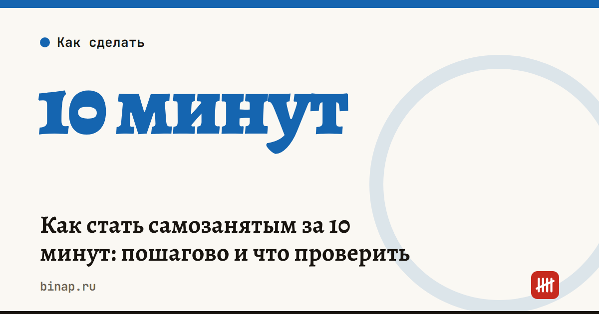

Как стать самозанятым за 10 минут: пошагово и что проверить

Стать самозанятым можно за 10 минут и бесплатно: скачайте приложение ФНС «Мой налог», войдите через Госуслуги или по паспорту — и регистрация готова. Налог — 4% с доходов от людей и 6% от компаний и ИП, взносов и отчётов нет. Главное ограничение — доход до 2,4 млн ₽ в год.
Коротко
- Регистрация — в приложении «Мой налог», через Госуслуги или в приложении банка, который работает с ФНС. Это бесплатно.
- Ставки: 4% — когда платят физлица, 6% — когда платят компании и ИП.
- Лимит дохода — 2,4 млн ₽ в календарный год.
- Обязательных взносов и деклараций нет. Чек выдаётся в приложении на каждое поступление.
- Новым самозанятым положен налоговый вычет 10 000 ₽: пока он не израсходован, ставки ниже — 3% и 4%.
- Режим действует как эксперимент до конца 2028 года.
Сроки, изменения и разборы для ИП и самозанятых — каждое утро в Telegram и MAX. Подпишитесь, чтобы не пропустить.
Шаг 1. Проверьте, подходит ли вам режим
Самозанятость подходит, если вы сами оказываете услуги или продаёте то, что сделали своими руками. Не подходит, если вы:
- нанимаете работников по трудовому договору;
- перепродаёте чужие товары;
- продаёте подакцизные товары или товары с обязательной маркировкой — подробнее в статье самозанятым запрещают продавать маркированные товары;
- зарабатываете больше 2,4 млн ₽ в год;
- работаете по договору с бывшим работодателем — доход от него в течение двух лет после увольнения нельзя учитывать как доход самозанятого.
Если что-то из списка про вас — нужен ИП. Как его открыть онлайн, — в статье как открыть ИП онлайн.
Шаг 2. Зарегистрируйтесь
- Через «Мой налог». Скачайте приложение ФНС, выберите вход через Госуслуги, личный кабинет налогоплательщика или по паспорту с фото.
- Через Госуслуги или приложение банка. Многие банки позволяют встать на учёт прямо в своём приложении — это то же самое, данные уходят в ФНС.
Обычно регистрация занимает несколько минут. Дату постановки на учёт видно в приложении.
Шаг 3. Решите, куда будут приходить деньги
Закон не требует отдельного счёта: принимать оплату можно на личную карту. Но отдельная карта или счёт помогает не путать личные переводы с доходом и не забывать выдавать чеки. Некоторые банки предлагают для самозанятых автоматическое формирование чеков при поступлении денег — сравните условия своего банка.
Шаг 4. Выдавайте чек на каждое поступление
Чек формируют в «Мой налог» или в приложении банка и отправляют клиенту. Если платит компания или ИП, в чеке указывают их ИНН — от этого зависит ставка 6%. Налог за месяц приложение считает само, платить нужно до 28-го числа следующего месяца.
Сколько вы заплатите: пример
Расчёт редакции: доход 80 000 ₽ в месяц, все клиенты — физлица.
| Сумма | |
|---|---|
| Налог по ставке 4% | 3 200 ₽ |
| Пока действует вычет (ставка 3%) | 2 400 ₽ |
| Экономия за счёт вычета в месяц | 800 ₽ |
Вычет 10 000 ₽ при таком доходе израсходуется примерно за 12,5 месяца (расчёт редакции: 10 000 ÷ 800).
Когда пора переходить на ИП
- Доход приближается к 2,4 млн ₽ в год.
- Нужны сотрудники или перепродажа товаров.
- Крупные клиенты просят работать как ИП.
Что выгоднее на вашем доходе, считайте в калькуляторе взносов ИП и калькуляторе УСН. Ещё про работу самозанятых — правила для тех, кто работает через платформы.
Частые вопросы
Нужно ли самозанятому платить взносы? Нет, обязательных взносов нет. Но и пенсионный стаж не копится, если не платить добровольно.
Можно ли быть самозанятым и работать по трудовому договору? Да, зарплата облагается отдельно. Нельзя только получать доход как самозанятый от своего работодателя или бывшего работодателя в течение двух лет.
Что будет, если превысить 2,4 млн ₽? Право на режим теряется. Чтобы не платить налог по общим правилам, заранее зарегистрируйте ИП и подайте уведомление о переходе на УСН.